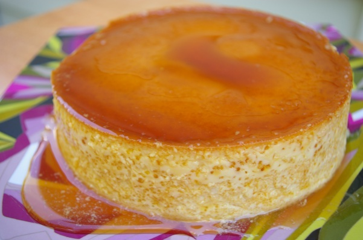

Quesillo Venezolano Tradicional
El postre favorito para meriendas y cumpleaños en cualquier hogar de Venezuela.

Ingredientes:
- 1 lata de leche condensada
- 1 medida de leche líquida (usando la misma lata)
- 5 huevos enteros
- 1 cucharadita de vainilla
- 1 taza de azúcar para el caramelo
Pasos de preparación:
- Derretir el azúcar directamente en la quesillera hasta obtener un caramelo dorado.
- Licuar los huevos, la leche condensada, la leche líquida y la vainilla por 2 minutos.
- Verter la mezcla en la quesillera acaramelada, tapar y cocinar a baño de María por 45 minutos.
Otras Meriendas Económicas
- Arroz con Leche: Con concha de limón y canela en polvo.
- Catalinas (Paledonias): Dulce tradicional a base de papelón y especias.
- Conservas de Coco: Ideales para compartir en familia por la tarde.